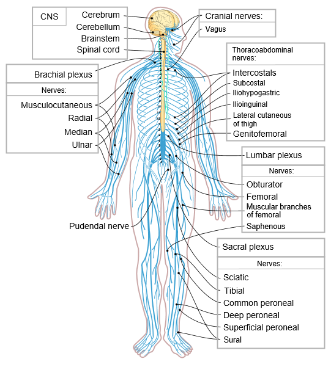

Nervous system overview (diagram).
Practice (3 steps)
-
SGI Pillar
Infinite Wisdom (Tehuti) — perception, interpretation, decision
-
Healing Plant Type
Restorative (Nervine/Tonic) — rebuild the signal network. Examples: oatstraw, gotu kola, ashwagandha.
-
Obi (4-cowrie) layer
Aláfíà (○○○○) — clarity/peace confirmation → “proceed with clean mind.”
-
Ifá concept
Orí (inner guidance & destiny navigation)
-
Key Teaching
The nervous system is the body’s oracle network: signal → meaning → direction.
Reflection: When you seek guidance, are your signals calm (Aláfíà) or noisy?